니치 설정
수많은 경쟁자들 사이에서
여러분을 선택해야만 할
이유를 만듭니다.
사람들은 이야기합니다.
유튜브 해서 대박 났다고.
그렇다면 왜
유튜브를 포기하는 사람들이
생기는 걸까요?
중간에 포기한 비즈니스 유튜브 채널들


비즈니스를 위한 유튜브에서 중요한 것은
조회수가 아닙니다.
영상을 본 사람들을
여러분의 고객으로 만드는 것입니다.
조회수는 나오는데
매출은 없는 유튜브
조회수는 평범한데
매출은 폭발하는 유튜브
어느 쪽을 선택하시겠어요?
여러분이 해야 할 것은
유튜브가 아닙니다.
마케팅입니다.
지금 하고 계신 것과 비교해보세요.
모든 계약에는
비밀유지 의무조항이 포함되어 있습니다.
이 자리에서 제가 공개할 수 있는 것은
저와 함께 성과를 만들어 내신 분들의
감사 인사뿐입니다.
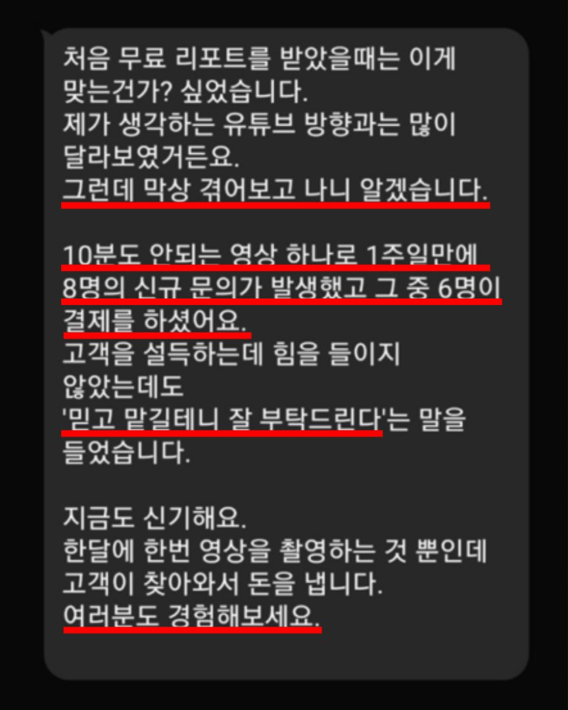
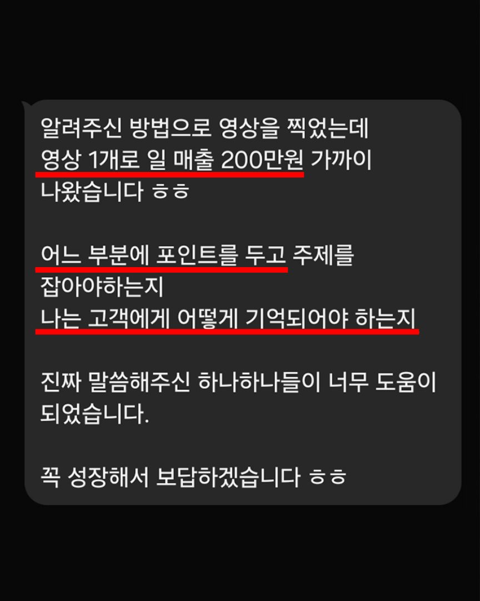
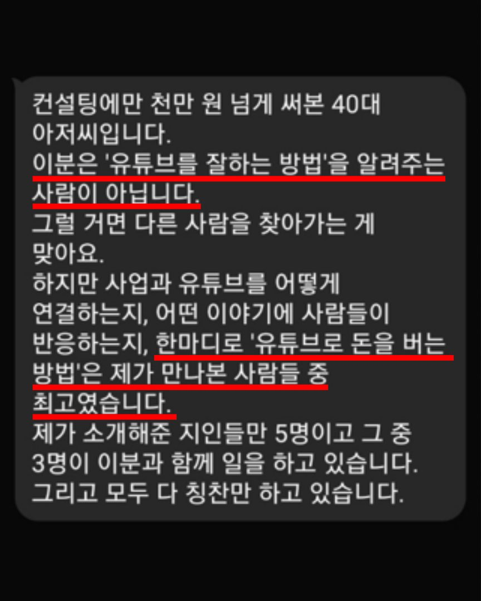
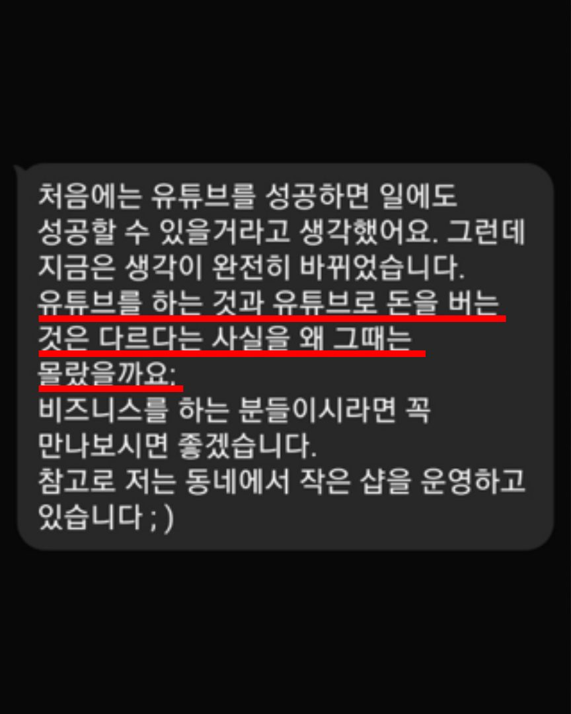
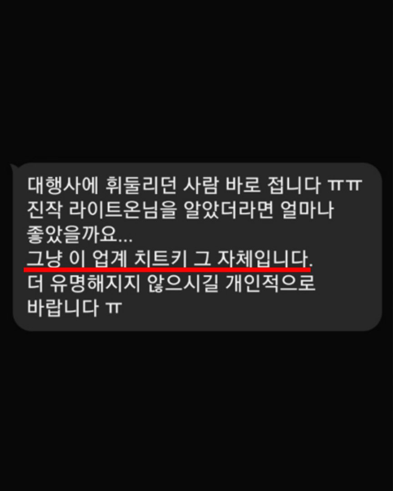
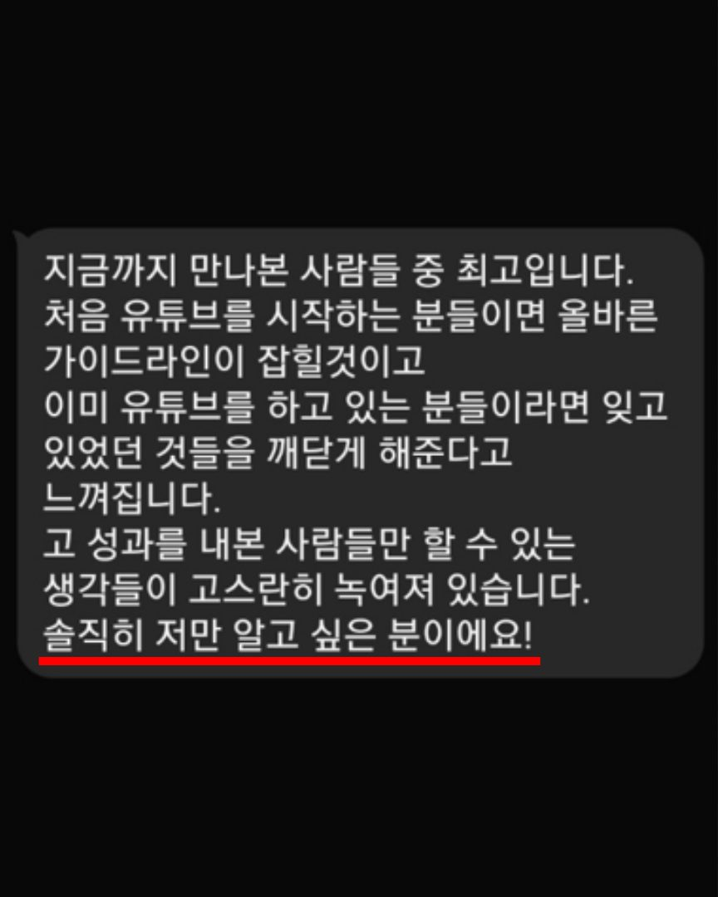
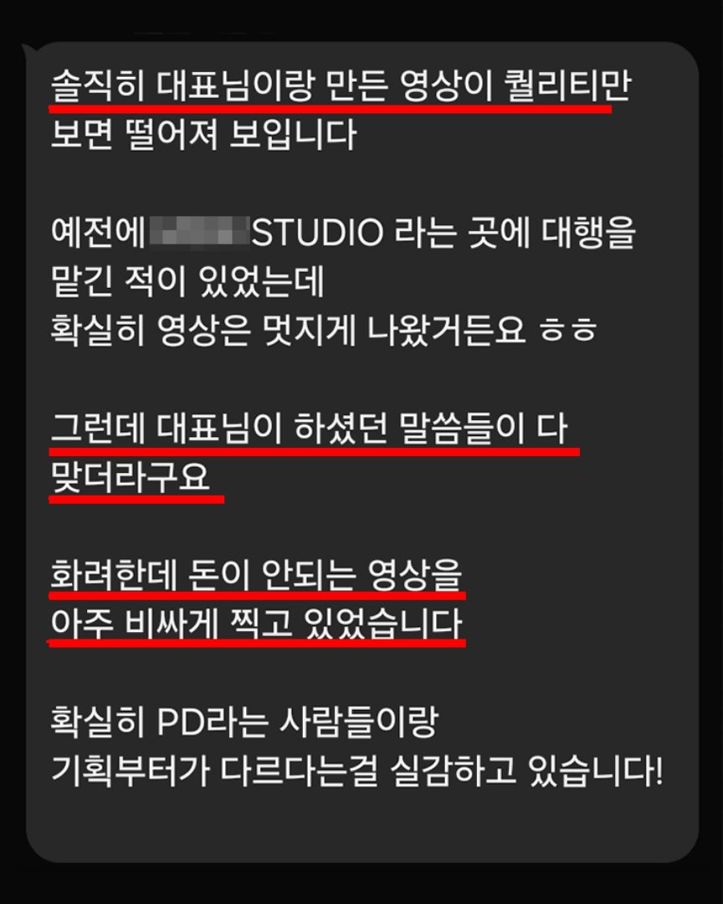
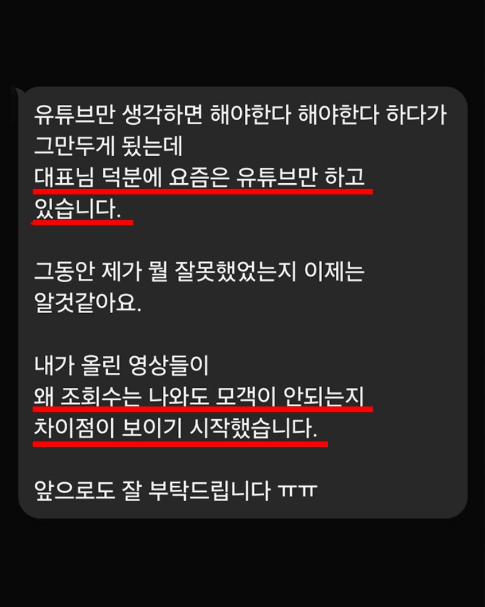
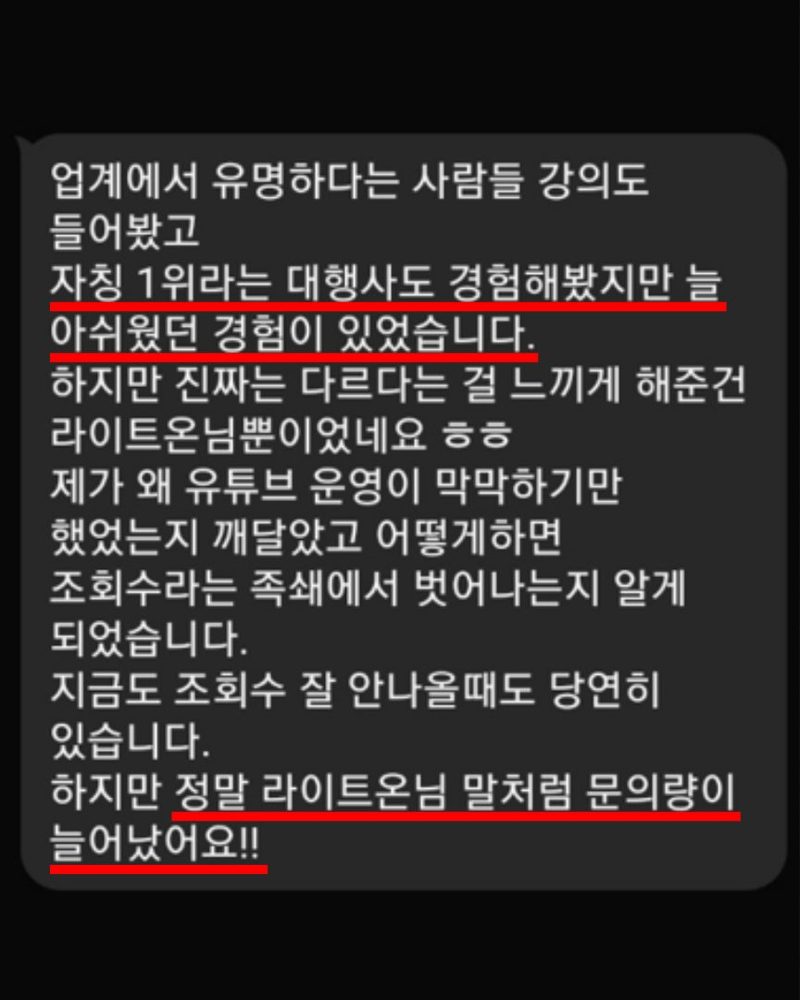
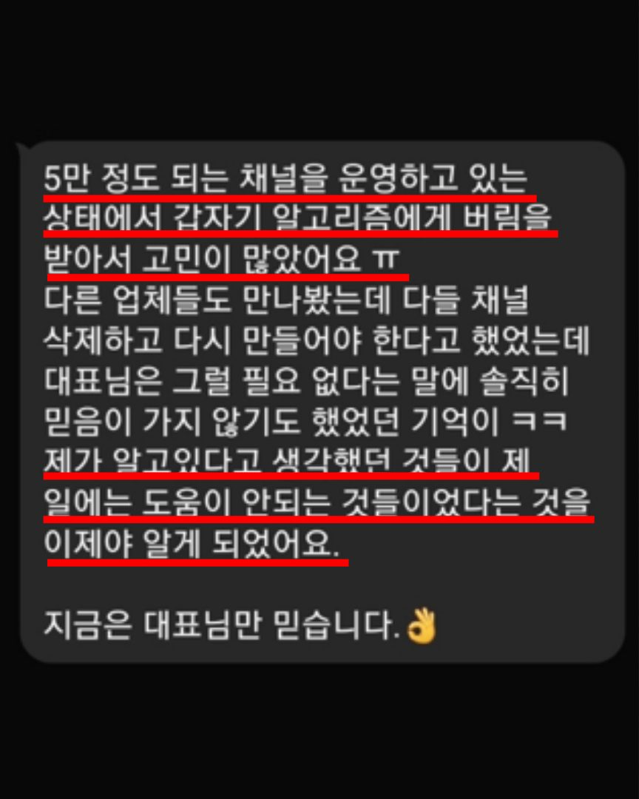
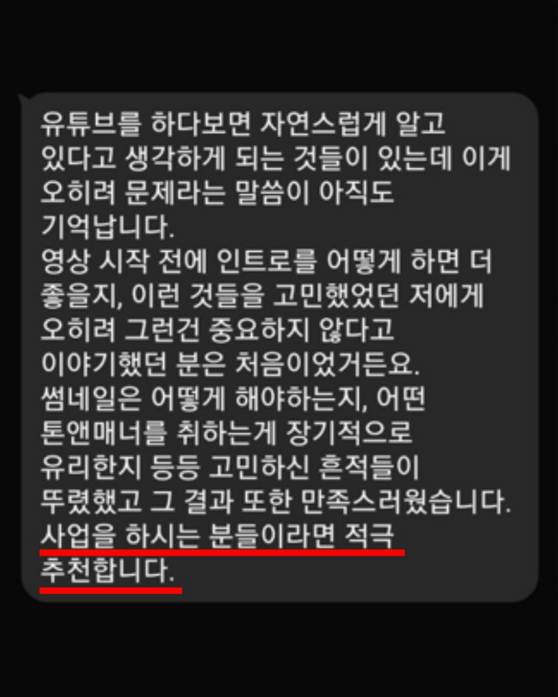
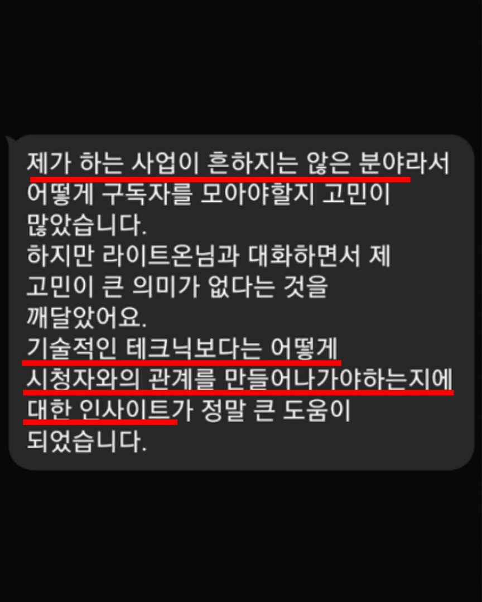
수많은 경쟁자들 사이에서
여러분을 선택해야만 할
이유를 만듭니다.
실제로 여러분에게
돈을 쓸 사람들을 정하고,
그들을 위한 콘텐츠를 설계합니다.
지금 바로 찍으실 수 있는 영상 2편을,
질문과 답변 형식으로 정리해 드립니다.
안녕하세요.
플로우애즈 대표 이민재입니다.
구독자 2천 명짜리 채널 하나로
월 매출 3,000만 원
11년 전, 대기업 D사를 퇴사하고
블로그로 마케팅을 시작한 저는
어느새 7년 차 콘텐츠 마케팅 회사의
대표가 되었습니다.
예전엔 블로그로도 충분했습니다.
하지만 지금의 마케팅에서
유튜브는 빼놓을 수 없는 존재가 되었죠.
그래서 유튜브를 기반으로 한
콘텐츠 마케팅에 집중하기 시작했습니다.
자주 가던 정형외과 원장님을 시작으로
변호사, 변리사와 같은 전문직,
그리고 동네 음식점부터 프랜차이즈 본사까지
수많은 영역에서 비즈니스의 성공을
함께 만들어왔습니다.
저와 함께 일하지 않으셔도 괜찮습니다.
대신 지금 딱 하나만 생각해보세요.
여러분은 지금
비즈니스를 위해 유튜브를 하고 있나요?
아니면
조회수의 노예가 되고 있나요?
비즈니스를 위한 유튜브 마케팅은
어떻게 해야 하는지
제가 직접 알려드리겠습니다.
네, 100만원 상당의 마케팅 진단은 무료입니다. 백번 잘한다고 설명해도 여러분 입장에서는 의미가 없습니다. 실질적인 도움이 될 만한 리포트를 보여드리는 것이 저에게도, 여러분에게도 훨씬 가치가 있습니다.
네, 됩니다. 채널이 있으시면 그 채널을 기준으로, 아직 없으시면 어떻게 시작하면 좋을지에 대한 계획을 수립합니다. 오히려 시작하지 않은 분이 유리한 경우도 많습니다.
고객 한 명당 매출이 큰 비즈니스일수록 성과가 빨리 보입니다. (병의원, 변호사·변리사 같은 전문직, 인테리어·시공, 학원, 프랜차이즈 등)
객단가가 낮은 비즈니스라고 효과가 없다는 뜻은 아닙니다. 성과가 눈에 보이기까지 걸리는 시간에서 차이가 날 수밖에 없다는 의미입니다.
평균 5영업일 내에 메일로 보내드립니다. 모두 대표인 제가 직접 작성하기 때문에 시간이 소요될 수 있습니다.
베이직 월 320만원(VAT 별도) — 기획·편집·업로드·채널관리, 본인 직접 촬영.
프리미엄 월 400만원(VAT 별도) — 기획·편집·업로드·채널관리 + 전문 감독 촬영.
결과물 — 월 롱폼 4개 + 쇼츠 10개.
기타 — 위 내용에 포함되지 않는 작업은 협의 후 결정됩니다. 서울·경기 외 지역은 경우에 따라 소정의 출장비가 발생할 수 있습니다.
첫 계약은 3개월이며, 이후 월 단위로 연장됩니다. 유튜브 알고리즘이 채널을 학습하는 데 평균적으로 3개월가량 소요되기 때문입니다.
평균적으로 성과가 도출되기까지 6개월, 안정기에 접어들기까지 12개월이 소요됩니다.
구독자 수와 조회수는 약속하지 않습니다. 지킬 수 없는 약속은 결국 고객을 속이는 일이 되기 때문입니다. 실제로 어뷰징으로 숫자를 만들어 보여주는 곳이 적지 않습니다.
대신 약속드릴 수 있는 것이 있습니다. 여러분의 비즈니스를 여러분보다 더 깊게 연구하겠습니다.
유튜브 채널과 업로드된 영상은 모두 고객님의 소유입니다(계약서에 명시해 드립니다). 계약이 종료되더라도 소유권에 대한 문제는 절대 발생하지 않습니다.
유튜브를 하지 말라는 말이 아닙니다.
잠깐만 멈춰서 생각해보시라는 말입니다.
대부분은 채널부터 만들고
어떤 영상을 찍을지 고민합니다.
그렇게 해서 조회수가 오른다고 하더라도
매출에는 도움이 되지 않을 겁니다.
비즈니스만으로도 충분히 바쁘시다는 것을
잘 알고 있습니다.
여러분의 시간을 가장 효율적으로 쓰는 방법을
리포트로 받아보세요.
1 / 3
신청 완료
리포트는 평균 5영업일 안에 메일로 보내드립니다.
아래 답변이 리포트의 차별화 포인트가 됩니다.
이 답이 없으면 누구에게나 해당하는 일반론밖에 드릴 수 없습니다.
한두 줄씩이면 충분합니다.
지금 어려우시면 신청완료 안내 메일에 있는 링크로
나중에 작성하셔도 됩니다.